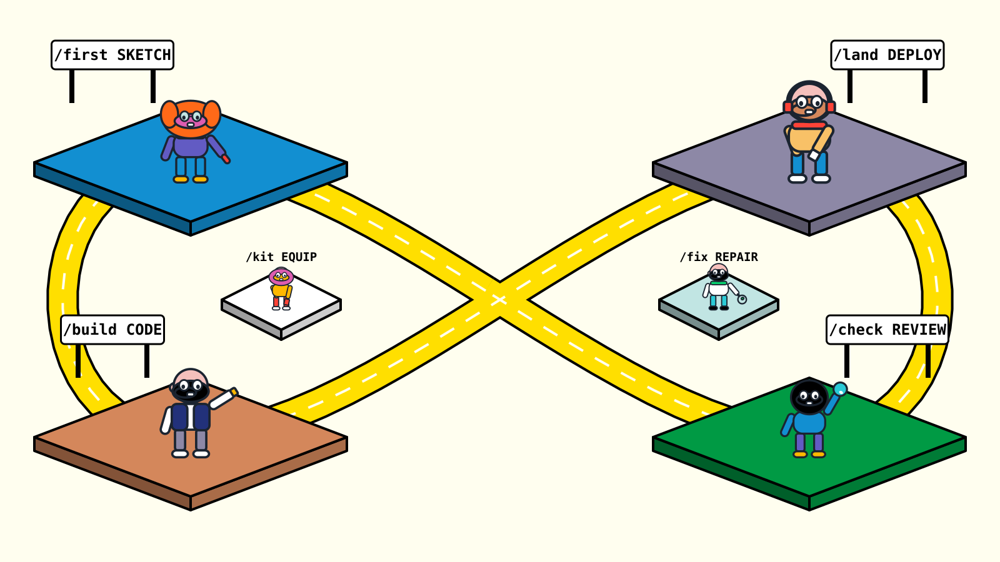

Skill prompts for AI agents
A rail your agent can’t fall off.
Install once, then move from planning to shipping without losing context. Six skill families make the next step obvious—and bring broken work safely back.

/kitDay 0 · set up
/firstPlan
/buildCode · test
/landShip
/checkMonitor
/fixRepair